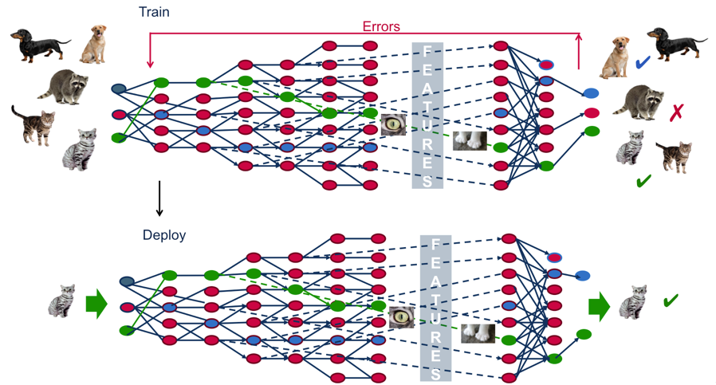
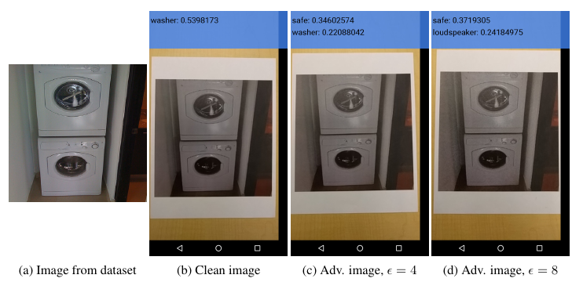
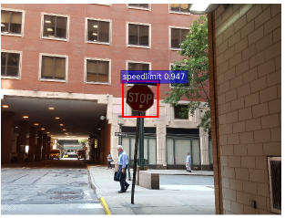
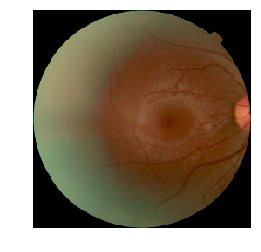
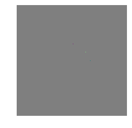
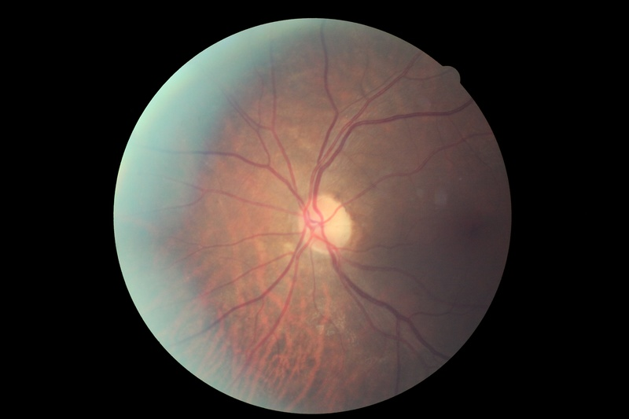
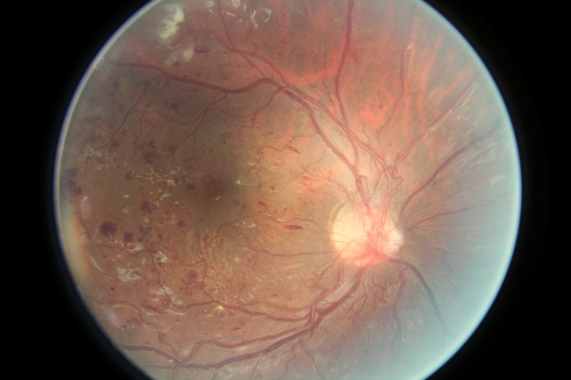
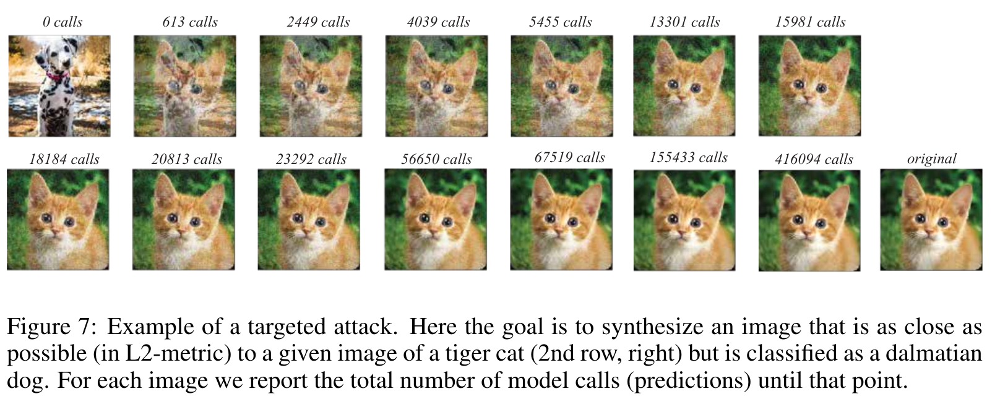
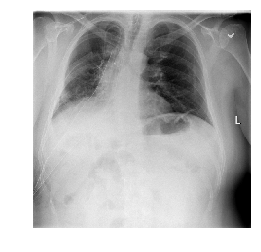
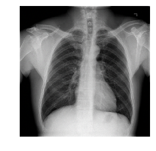

Blind Adversarial Attacks Against Medical Deep Learning Systems
Peter Steinbach (MPI CBG, Scionics)
2nd MLC Workshop May 16, 2019
Helmholtz-Zentrum Dresden-Rossendorf, Germany
psteinb_ psteinb
Introducing Adversarial Examples
Supervised Deep Learning Classifiers

From [MapRBlog]
What are Adversarial Examples?

From [Goodfellow14] (based on [Szegedy14])
Fooling by printing

From [Kurakin16]
Fooling by backdoors

From [Gu17]
Consequences?
security of autonomous driving
security of voice recognition systems (Siri, Alexa, …)
product quality of online tools
trust in automated decision tools
trust in scientific classifiers
| Affects any deployed ML system! |
Adversarial Attacks Against Medical Deep Learning Systems
Doctor’s Appointment
Measurement
Diagnosis
or
Adversarial Attacks Against Medical Deep Learning Systems
Samuel G. Finlayson, Hyung Won Chung, Isaac S. Kohane, Andrew L. Beam (HMS+Harvard+MIT)
Science, 22 Mar 2019, Vol. 363, Issue 6433, pp. 1287-1289, 10.1126/science.aaw4399
The prospect of improving healthcare and medicine with the use of deep learning is truly exciting. […] it seems inevitable that medical deep learning algorithms will become entrenched in the already multi-billion dollar medical information technology industry.
Conclusion
In this work, we have outlined the systemic and technological reasons that cause adversarial examples to pose a disproportion- ately large threat in the medical domain, and provided examples of how such attacks may be executed.
Can this be reproduced ?
3 open datasets
skin cancer dataset (omitted from this presentation)
Diabetic Retinopathy (DR)
 |
|
ChestX-ray8
|
|

Data Access
Diabetic Retinopathy Dataset
83 GB shared through kaggle
X-ray Dataset
42 GB shared through science torrent
| Very Good! |
Code
notebooks reproduce all figures based on downloaded weights
python script to retrain two architectures (Resnet50, InceptionV3)
Code Quality
code was executable once dropbox weights downloaded
notebooks work from top to bottom
code largely undocumented
paper reports Resnet50 results, weights are for InceptionV3
readme reports similar results for either
My Rebuttal
Claim
For each of our representative medical deep learning classifiers, both white and black box attacks were highly successful.
White Box Attacks?
Given:
Weight Update Rule:
Projected Gradient Descent Attack
iterate until \(x^{t+1}\) is missclassified
For a given set of allowed variations \(S\)
PGD [Madry17],[Kurakin1611] is a White Box Attack!
Taxonomy based on [Biggio18]
| type | white box | grey box | black box |
|---|---|---|---|
adversary knows | all of | subset of | only queries |
|
|
|
|
| Boundaries not clear cut! |
Black-Box Attacks assume knowledge
[…] black box attacks were performed by crafting the attack against an independently-trained model with the same architecture and then transferring the resultant adversarial examples to the victim.
My Motivation
How about real black-box attacks?
Foolbox
import foolbox
import keras
import numpy as np
keras_model = ...#load weights
fmodel = foolbox.models.KerasModel(keras_model, bounds=(0, 255),
preprocessing=preprocessing)
image, label = foolbox.utils.imagenet_example()
attack = foolbox.attacks.LinfinityBasicIterativeAttack(fmodel)
adversarial = attack(image[:, :, ::-1], label)offers a variety of white and black box attacks
simple API can wrap models from TensorFlow, PyTorch, Theano, Keras, Lasagne, MXNet
Pure Black-box on Diabetic Retinopathy
Original | Adversarial | Difference*20  |
attack = foolbox.attacks.SaltAndPepperNoiseAttack(fmodel)Easy! But why?
Class Inbalance
|
|

DR Pathologies
Healthy  | Malignant  |
Chest X-Ray Dataset?
No simple attack worked
| !
|
Decision Boundary Attack

Pure Black-box Attacks on Chest X-Ray
|  Adversarial |  Difference*20 |
Summary
Adversarial Attacks Against Medical Deep Learning Systems
robustness of DL classifiers as diagnostic systems
successfully achieved reproducibility (praise to the authors)
illustrated classifiers and attacks appear remote to reality
portions of the paper contradictory in the details
Bigger Picture
end-to-end DL may not produce machine intelligence (data intelligence?)
if data is all you got, better treat it carefully!
adversarial examples = tool to probe resilience of your classifiers
References
Szegedy, Christian, et al. "Going deeper with convolutions." Proceedings of the IEEE conference on computer vision and pattern recognition. 2015, arXiv:1409.4842
Goodfellow, Ian J., Jonathon Shlens, and Christian Szegedy. "Explaining and harnessing adversarial examples." arXiv preprint arXiv:1412.6572 (2014).
Kurakin, Alexey, Ian Goodfellow, and Samy Bengio. "Adversarial examples in the physical world." arXiv preprint arXiv:1607.02533 (2016).
"Demystifying AI, Machine Learning and Deep Learning", blog entry
Finlayson, Samuel G., et al. "Adversarial attacks against medical deep learning systems." arXiv preprint arXiv:1804.05296 (2018).
Biggio, Battista, and Fabio Roli. "Wild patterns: Ten years after the rise of adversarial machine learning." Pattern Recognition 84 (2018): 317-331. arXiv:1712.03141
Gu, Tianyu, Brendan Dolan-Gavitt, and Siddharth Garg. "Badnets: Identifying vulnerabilities in the machine learning model supply chain." arXiv preprint arXiv:1708.06733 (2017).
Aleksander Madry, Aleksandar Makelov, Ludwig Schmidt, Dimitris Tsipras, and Adrian Vladu. 2017. Towards deep learning models resistant to adversarial attacks.
arXiv preprint arXiv:1706.06083 (2017).
Alexey Kurakin, Ian Goodfellow and Samy Bengio. Adversarial Machine Learning at Scale. arXiv preprint arXiv:1611.01236 (2016)
Jonas Rauber, Wieland Brendel and Matthias Bethge. Foolbox: A Python toolbox to benchmark the robustness of machine learning models. arXiv preprint arXiv:1707.04131 (2017)
Wieland Brendel, Jonas Rauber and Matthias Bethge. Decision-Based Adversarial Attacks: Reliable Attacks Against Black-Box Machine Learning Models. arXiv preprint arXiv:1712.04248 (2017)